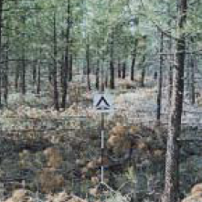
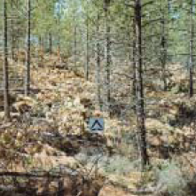

|
|
Fire Behavior Fuel Model SB2 (202) -- Moderate Load Activity Fuel or Low Load Blowdown |
Scott and Burgan (2005) classify Fire Behavior Fuel Model SB2 (202) in the Slash-Blowdown Fuel Type and describe it as follows:
The primary carrier of fire in SB2 is moderate dead and down activity fuel or light blowdown. Fine fuel load is 7 to 12 t/ac (16 to 27 tonne/ha), evenly distributed across 0 to 0.25 (0 to 0.64 cm), 0.25 to 1 (0.64 to 2.5 cm), and 1 to 3 inch (2.5 to 7.6 cm) diameter classes, depth is about 1 foot (0.3 meters). Blowdown is scattered, with many trees still standing. Spread rate is moderate; flame length moderate.
Scott and Burgan's (2005) photographs on page 68 are examples of fuels fitting this model.
|  | Scott and Burgan (2005) Photo 1, Fire Behavior Fuel Model 202. |
|  | Scott and Burgan (2005) Photo 2, Fire Behavior Fuel Model 202. |